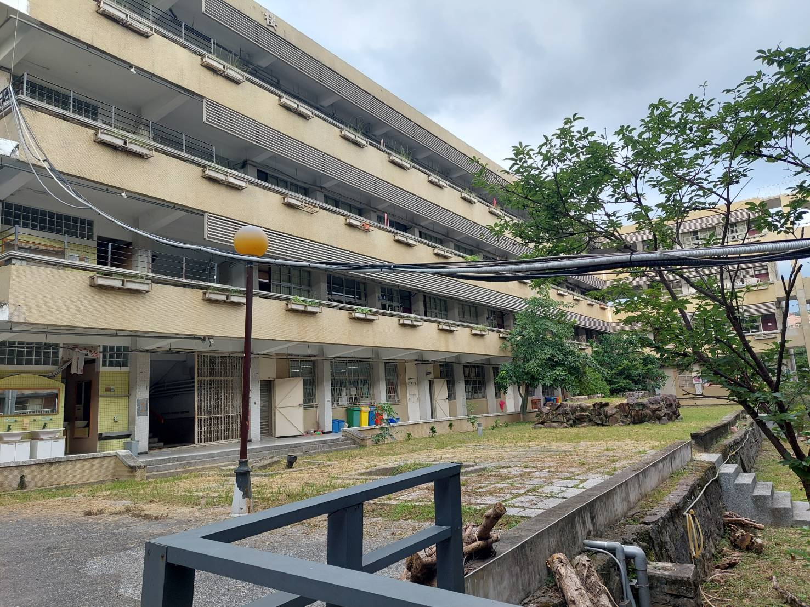
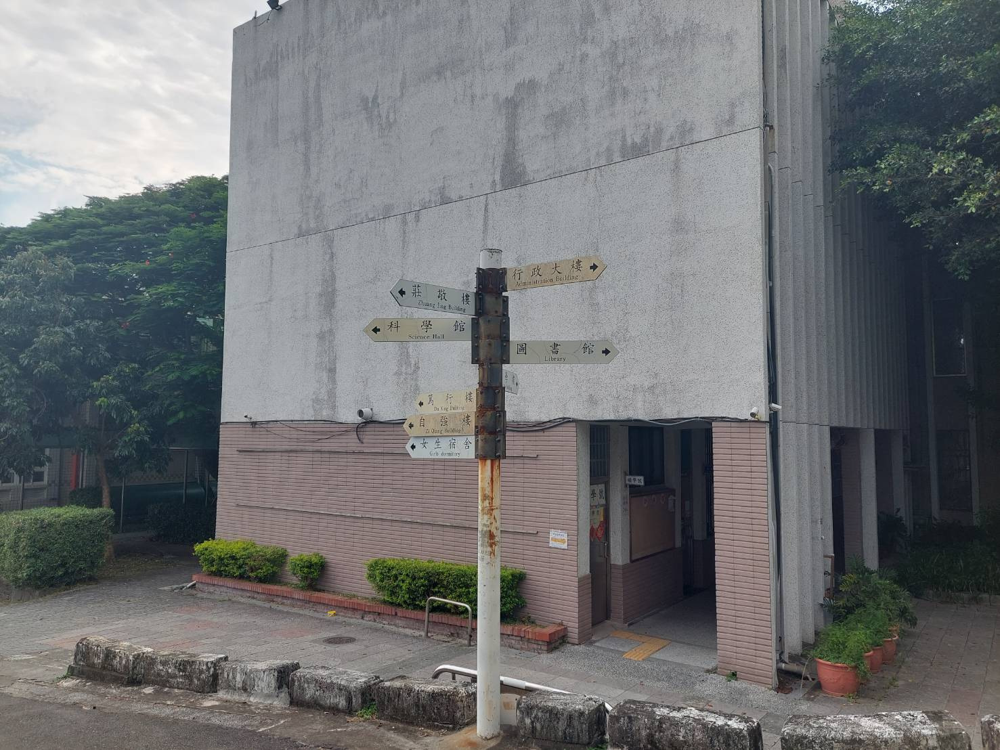
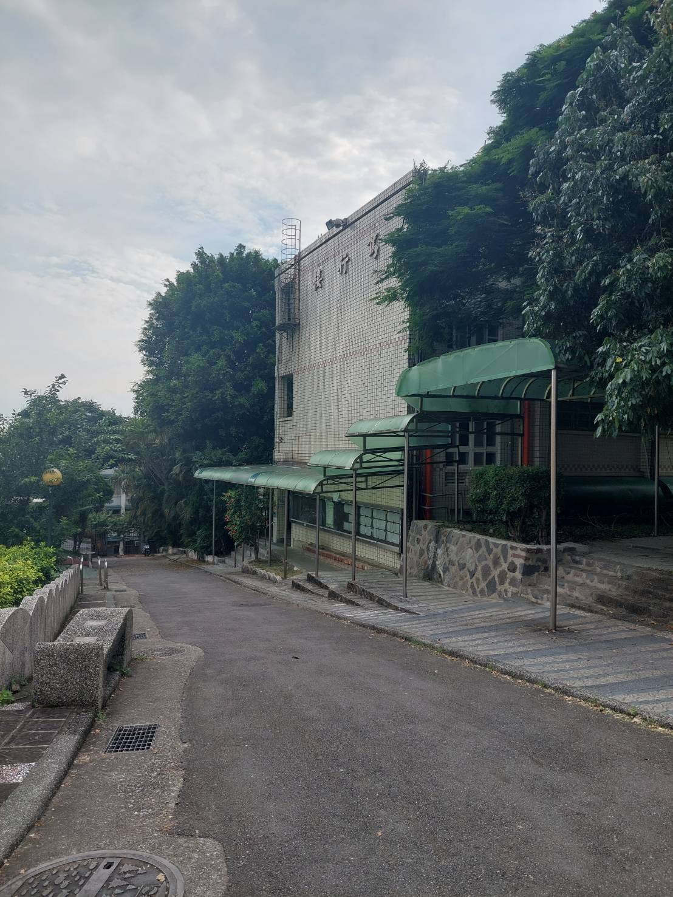

行政大樓
主要位於大門正前方大樓，裡面包括校長室、校史室、總務處、會議室和人事室，相關報修或找校長簽名記得不要走錯喔!

圖書館
主要位於行政大樓左側樓梯上那棟，2樓主要分資訊組和圖書館，3樓主要是自習室，數位閱讀是，美力教室等等，十分適合做自主學習課程，如果想要晚自習也可以和圖書館登記到自習室，那裡有時有解題小老師在你需要的時候可以找他替你解答，電腦相關問題也可以去資訊組詢問老師!

復興大樓
主要位於圖書館左側山上那棟大樓，1樓有學務處和各科老師辦公室，2樓是屬於高三學長姐的教室、輔導室和團輔室，3樓和4樓是屬於我們小高一充滿愉快氣氛的教室

敬業樓
主要位於復興大樓後面，1樓是各科老師的辦公室，2樓和3樓主要是高三學長姐的教室
勤學樓
主要位於校門口左側走道旁的大樓，1樓為合作社和健康中心，2樓為教務處，3樓為專科教室、多與智慧教學中心和教輔室
篤行樓
主要位於勤學樓下方，1樓為體育組，2、3樓體育班和高二學長姊的教室
